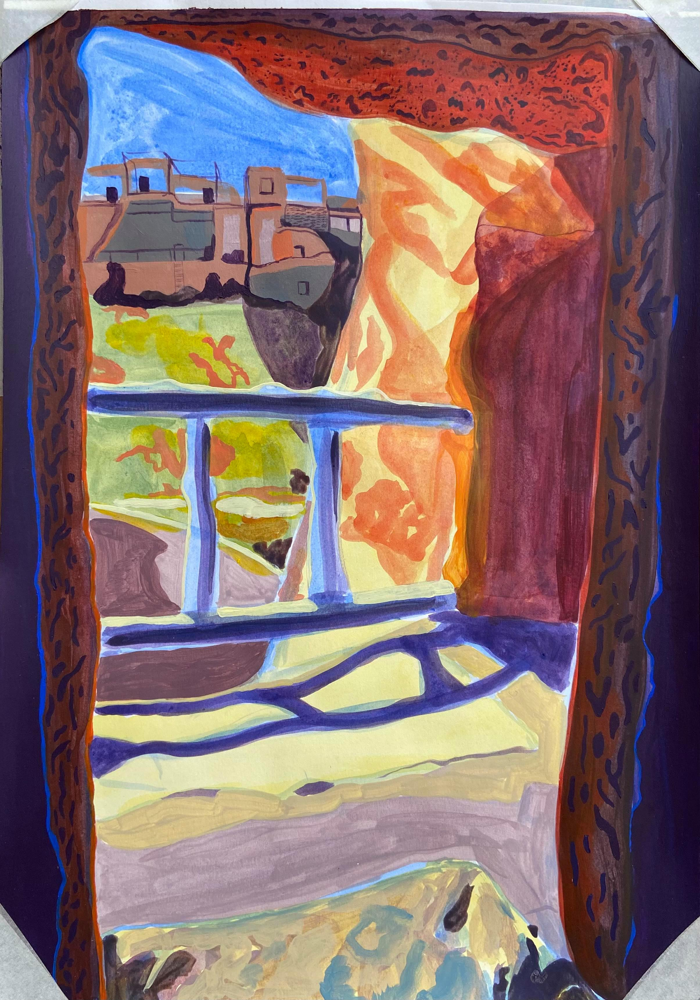

Cappadocia, a semi-arid region in central Turkey, is known for its distinctive “fairy chimneys,” tall, cone-shaped rock formations clustered in Monks Valley, Göreme and elsewhere. Other notables sites include Bronze Age homes carved into valley walls by troglodytes (cave dwellers) and later used as refuges by early Christians. The 100m-deep Ihlara Canyon houses numerous rock-face churches.

Untitled 1.

Untitled 2.
"There are three qualities I think of great importance, one being that the work must be dynamic this is its life force. Without it painting is just a surface.
The second is austerity and precision - there must be no area that allows the spectator to dream himself away from the picture. The picture is the reality not his fantasy.
The third quality is detachment.
A work without these qualities becomes an essay in self-indulgence.
There must be no compromise.
Each work should be a celebration."
- Jack Smith, 1971

Portrait by Orlando Bloom.